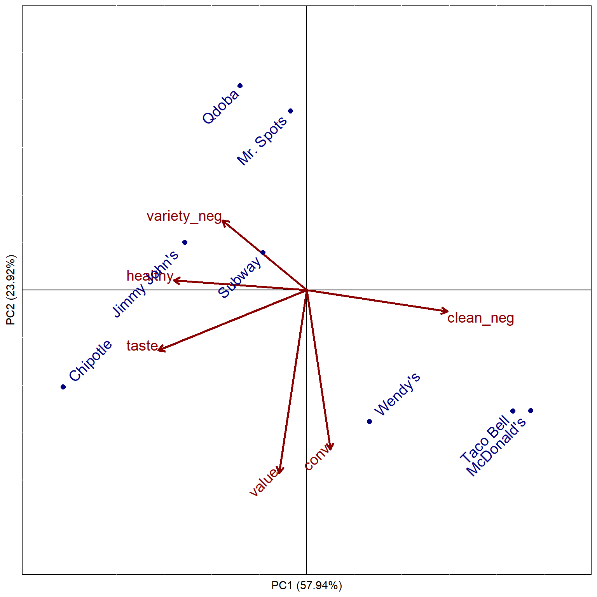

Topic 6 Positioning
6.2 Positioning Overview
6.2.1 The Concept of Positioning
- Positioning is not what you do to a product
- Positioning is what you do to the mind of the prospect
6.2.2 Position vs. Positioning
- Position The place a brand, product line, or organization in general occupies in consumers’ minds relative to competing offerings.
- Positioning Developing a specific marketing mix to influence potential customers’ overall perception of a brand, product line, or organization in general.
6.2.3 Difficulty of Positioning
- Positioning is easy when your product is clearly superior in an important way…
- But few are
- Most product markets have a lot of parity, so…
- Positioning is more important and more difficult
6.2.4 Competitive Market Structure
- Difficulty of positioning depends on level of product competitiveness
- Easy positioning…
- Product Superiority: Clearly superior in many important ways
- “In the middle” positioning…
- Product Differentiation: One or more specific features superior to the competition (but otherwise similar)
- Product Differentiation: One or more specific features superior to the competition (but otherwise similar)
- Difficult positioning…
- Product Parity: No essential differences from one product to another
- Easy positioning…
6.2.5 Positioning with Product Parity
- Remember… Positioning is what you do to the mind of the prospect
- Thus… Need to create points of difference, whether:
- They exist or not
- They are meaningful or not
6.2.6 Requirements for Effective Positioning
- Uniqueness
- Desirability
- Believability
Not all three are required… But the more there are, the more likely the positioning will be effective
6.2.6.1 Uniqueness
- Be different in some way
- Must get through the clutter
- Slightly better on an important feature
-vs.-
Unique on a less important feature
- Slightly better on an important feature
- More brands = more difficult
- Find a niche that is not yet occupied
6.2.7 Steps in Positioning
- Assess the positions occupied by competing products
- Determine the dimensions underlying these positions
- Choose a market position where efforts will have the greatest impact

6.2.8 Positioning Research Methods
6.2.8.1 Image Profile
- Average ratings of brands/products on a number of attributes
- Easy to create, but…
- Difficult to interpret

6.2.8.2 Quadrant Analysis
- x-axis contains the average ratings of one brand/product on a number of attributes
- y-axis contains the average importance of each attribute
- Easily shows what attributes to emphasize, but…
- Only looks at one brand/product at a time

6.2.8.3 Perceptual Maps
- Shows the location of competing brands/ products in a “virtual” space
- Enable marketers to see at a glance how own brand/product relates to the competition

6.2.8.3.1 Types of Perceptual Maps
- Discriminant Analysis Maps
- Based on identifying differences between objects with respect to several variables simultaneously
- Multidimensional Scaling Maps
- Based only on similarities between objects
- Factor Analysis Maps
- Based on the dimensions underlying a set of variables
- EMPHASIS OF THIS CLASS
6.3 Factor Analysis
- Generic term for identifying dimensions underlying a set of variables
- Finds uncorrelated linear dimensions that capture the most variance in the data
- Main types:
- exploratory factor analysis
- principal components analysis
6.4 Principal Components Analysis (PCA)
Recomputes a set of variables in terms of linear equations (components) that capture linear relationships in the data * First component captures as much variance as possible from all variables * Second component captures as much variance as possible that remains * Continue until as many components as variables * Analyst retains/analyzes a subset of components
6.4.1 PCA Process
- Determine number of factors to retain
- Rotate factors to aid interpretation
- Interpret factors
- Use results in further analysis (e.g., perceptual maps)
6.4.1.1 Step 1: Determine number of factors to retain
- How many factors?
- Eigenvalues > 1
- E.g., Keep two components, accounting for about 85% of variation
Component Eigenvalue Difference Proporation Cumulative 1 3.7574 0.7588 0.4697 0.4697 2 2.9986 2.4108 0.3748 0.8445 3 0.5878 0.2561 0.0735 0.9180 4 0.3317 0.1386 0.0415 0.9594 5 0.1931 0.1045 0.0241 0.9836 6 0.0886 0.0616 0.0111 0.9946 7 0.0270 0.0112 0.0034 0.9980 8 0.0158 NA 0.0020 1.0000 - Examine Scree Plot
- Sometimes called an elbow plot
- Look for bend or kink in the plot
- Number of components to retain is the number prior to that kink

- Eigenvalues > 1
6.4.1.2 Step 2: Rotate factors to aid interpretation
Factor loadings are the correlation between each variable and each factor
- Higher loadings indicate the variable is representative of the factor
Unfortunately, unrotated loadings may not provide a meaningful pattern to understand the factors
PC1 PC2 Unexplained perform 0.3327 0.3073 0.3009 leader 0.3116 0.4276 0.0867 lattech -0.3656 0.2875 0.2500 fun -0.4010 -0.2957 0.1335 serious 0.2730 0.4499 0.1131 bargain 0.3722 -0.3160 0.1801 value 0.4229 -0.2843 0.0855 trendy -0.3253 0.4117 0.0941 Rotating the factors redistributes the variance from earlier factors to later factors to make more meaningful patterns
Factor/component loading guidelines
\(\rho<0.4\Longrightarrow\) no loading
\(0.4\le \rho<0.6\Longrightarrow\) low” loading
\(\rho\ge0.6\Longrightarrow\) “high” loadingPC1 PC2 Unexplained perform 0.0490 0.4502 0.3009 leader -0.0459 0.5271 0.0867 lattech -0.4645 -0.0234 0.2500 fun -0.1081 -0.4864 0.1335 serious -0.0897 0.5185 0.1131 bargain 0.4882 0.0062 0.1801 value 0.5057 0.0634 0.0855 trendy -0.5157 0.0967 0.0941
6.4.1.3 Step 3: Interpret factors
- (not)\(lattech\), \(bargain\), \(value\), (not)\(trendy\) describe factor 1
- Might label factor 1 as “latest”
- \(perform\), \(leader\), (not)\(fun\), and \(serious\) describe factor 2
- Might label factor 2 as “performance”
PC1 PC2 Unexplained perform 0.0490 0.4502 0.3009 leader -0.0459 0.5271 0.0867 lattech -0.4645 -0.0234 0.2500 fun -0.1081 -0.4864 0.1335 serious -0.0897 0.5185 0.1131 bargain 0.4882 0.0062 0.1801 value 0.5057 0.0634 0.0855 trendy -0.5157 0.0967 0.0941
6.5 Creating a Percptual Map using PCA
Steps:
- Map Brands
- Map Attributes
- Interpret Map
6.5.1 Map Brands
Using rotated loading matrix and average brand scores for each variable, obtain a score for each brand on each component
Attribute Alpha’s Mean Factor 1 Mean x Factor 1 Factor 2 Mean x Factor 2 perform -1.2952 0.0490 -0.0635 0.4502 -0.5831 leader -0.7840 -0.0459 0.0360 0.5271 -0.4133 lattech 0.5696 -0.4645 -0.2646 -0.0234 -0.0133 fun 1.0862 -0.1081 -0.1174 -0.4864 -0.5283 serious -1.2024 -0.0897 0.1079 0.5185 -0.6234 bargain 0.3347 0.4882 0.1634 0.0062 0.0021 value 0.2434 0.5057 0.1231 0.0634 0.0154 trendy -0.7042 -0.5157 0.3632 0.0967 -0.0681 -1.7519 -0.1810 0.3481 1.1523 -2.2120 Use factor scores for each brand as coordinates on the perceptual map
brand scr1 scr2 Alpha 0.3480 -2.2120 Beta -0.8181 3.1213 Delta -1.9904 -1.5338 Eta 0.1985 -0.3866 Gamma -0.7339 2.8111 Kappa 2.6707 0.7768 Lambda 3.4634 0.5167 Sigma -2.0978 -0.8910 Theta -1.3777 -0.4682 Zeta 0.3373 -1.7343
6.5.2 Map Attributes
- Factor loadings serve as the coordinates for the attributes
- Loadings often need to be scaled to be used on the same map as the brands
Figure 6.1: Loadings NOT Scaled
Figure 6.2: Loadings Scaled
6.5.3 Interpret Map
- Length of line represents amount of variance explained for that attribute
- Lines extend in opposite direction
- Perpendicular line from brand to attribute vector shows how brand is perceived on that attribute
- Further along the vector, the higher the association between that brand and attribute
- Distance between brands shows how similar the market perceives them to be
6.6 Joint-Space Maps
Perceptions vs. Preferences
Preferences are fundamentally different than perceptions
- Customers may perceive a brand as safe, but it may not be an determinant attribute
- Preferences may not change according to the magnitude of an attribute
Joint-space maps:
Incorporates perceptions and preferences into same map
Interpreted in a similar manner to attribute vectors
Preference “driven” by attributes vectors most parallel to preference vector

6.7 Positioning Example
6.7.1 Overview
Goal: Create a joint-space map of BGSU students perceptions and preferences of fast food restaurants
Attributes: All measured on 5-point scale
- Cleanliness(-), \(clean\_neg\)
- Convenience, \(conv\)
- Healthy options, \(healthy\)
- Variety(-), \(variety\_neg\)
- Value, \(value\)
- Taste, \(taste\)
6.7.2 Examine the Data
- Mean (top table) and standard deviation (bottom table) for each restaurant for each attribute
- Nothing out of the ordinary
- Some attributes have more variation (\(conv\), \(healthy\), and \(taste\))
Table 6.1: Attribute Means (Top) and Standard Deviations (Bottom) (R code) rest clean_neg conv healthy variety_neg value taste Chipotle 2.025 3.850 3.900 2.650 3.800 4.250 Jimmy John’s 2.050 3.875 3.700 2.700 3.450 3.550 McDonald’s 2.825 4.325 1.975 2.275 3.750 2.925 Mr. Spots 2.475 2.950 2.600 2.675 3.250 3.675 Qdoba 2.150 2.975 3.575 2.550 3.200 3.425 Subway 2.450 3.525 4.175 2.225 3.400 3.650 Taco Bell 2.850 4.350 1.800 2.200 3.650 3.250 Wendy’s 2.625 4.200 2.725 2.075 3.625 3.775 rest clean_neg conv healthy variety_neg value taste Chipotle 0.947 1.099 0.982 1.075 1.159 1.104 Jimmy John’s 0.904 1.244 1.067 1.091 1.154 1.239 McDonald’s 1.035 0.859 0.891 1.012 1.171 1.163 Mr. Spots 0.816 1.176 0.778 0.971 1.006 0.971 Qdoba 0.864 1.097 0.931 0.932 1.067 1.196 Subway 1.037 1.176 1.059 1.050 1.033 1.122 Taco Bell 1.027 0.834 0.853 1.018 1.210 1.296 Wendy’s 0.868 0.883 0.784 0.888 0.897 0.974 - Correlation matrix of attributes
- Some variables have fairly high correlations with others
- \(taste\) and \(value\)
- \(clean\_neg\) and \(healthy\)
- \(clean\_neg\) and \(taste\)
Table 6.2: Attribute Correlation Matrix (R code) clean_neg conv healthy variety_neg value taste clean_neg 1.0000 0.0209 -0.4050 0.2101 -0.2069 -0.3557 conv 0.0209 1.0000 -0.0486 -0.3334 0.1905 0.1310 healthy -0.4050 -0.0486 1.0000 -0.1391 0.1504 0.3336 variety_neg 0.2101 -0.3334 -0.1391 1.0000 -0.2872 -0.2159 value -0.2069 0.1905 0.1504 -0.2872 1.0000 0.4677 taste -0.3557 0.1310 0.3336 -0.2159 0.4677 1.0000 - Some variables have fairly high correlations with others
6.7.3 How many factors
- How many factors should be retained?
- Only the first two components have eigenvalues > 1, and they explain nearly 82% of the variation
- Thus, retaining two components seems appropriate
Table 6.3: Eigenvalue Table (R code) Component Eigenvalue Difference Proporation Cumulative 1 3.4763 2.0409 0.5794 0.5794 2 1.4354 0.8174 0.2392 0.8186 3 0.6180 0.2509 0.1030 0.9216 4 0.3671 0.2927 0.0612 0.9828 5 0.0744 0.0455 0.0124 0.9952 6 0.0288 NA 0.0048 1.0000 )](_main_files/figure-html/t06scree01-1.png)
Figure 6.3: Scree Plot (R code)
6.7.4 Rotate factors
- Rotate factors to aid in interpretation (after rerunning with 2 components)
- Cleanliness, Healthy options, and Taste load on the first dimension
- Convenience and Value load on the second dimension
- Variety doesn’t load much on either dimension
Table 6.4: Rotated Factor Loadings (R code) PC1 PC2 Unexplained clean_neg 0.5398 -0.0824 0.0829 conv 0.0920 -0.6118 0.0803 healthy -0.5103 0.0374 0.2297 variety_neg -0.3231 0.2670 0.3916 value -0.1057 -0.7018 0.0738 taste -0.5694 -0.2316 0.2300
6.7.5 Create perceptual map
What two restaurants are most similar?
Which restaurant has the least variety?
Which restaurant has the highest taste?
Which two restaurants have the lowest value?
Which attribute is least described by the map?
Figure 6.4: Perceptual Map
6.7.6 Create joint-space map
What attribute most drives preference?
Which attribute least drives preference?
Which two restaurants are least preferred?
)](_main_files/figure-html/t06prefmap02-1.png)
Figure 6.5: Joint Space Map (R code)
6.8 Suggested Readings
- Principals of Marketing Engineering and Analytics, 3rd Edition (2017). Lilien, Gary L., Rangaswamy, Arvind, and De Bruyn, Arnaud.
- Course reserves
- Chapter 4: Positioning
- Course reserves
- Multivariate Data Analysis. Hair, Joseph F.; Black, William C.; Babin, Barry J.; Anderson, Rolph E.
- 7th Edition: Search for “multivariate data analysis 7th edition hair”
- Chapter 3: Exploratory Factor Analysis
- 5th Edition: Course reserves
- Chapter 9: Factor Analysis
- 7th Edition: Search for “multivariate data analysis 7th edition hair”
6.9 R Code
Figure 6.3
Figure 6.5
Table 6.1
# Create dataframe of attributes
ffpos <- ffattrib %>%
mutate(clean_neg=6-clean, # Reverse code 'clean'
variety_neg=6-variety) %>% # Reverse code 'variety'
select(rest, clean_neg, conv, healthy, # Select needed columns
variety_neg, value, taste, pref) # Include preference also
# Examine data
ffpos %>%
group_by(rest) %>%
select(-pref) %>% # Don't examine preference
summarise_all(mean) # 'summarise_all()' summarizes all variables
ffpos %>%
group_by(rest) %>%
select(-pref) %>% # Don't examine preference
summarise_all(sd)